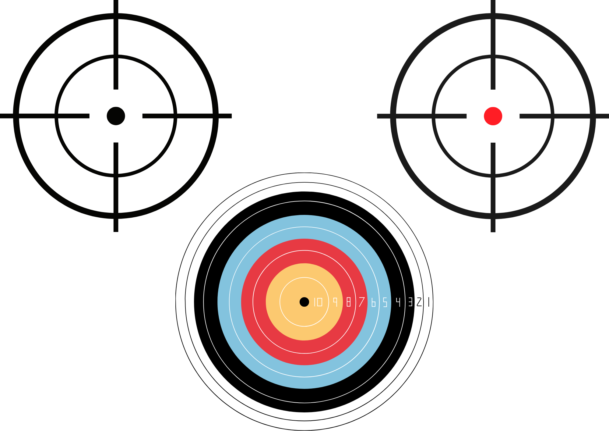

V tomto testu si projdete několik mapových variant. Vaším úkolem bude plnit zadané instrukce.
Nejprve vás čeká kalibrace očí, poté tréninková mapa a nakonec 4 testovací mapy.
Pro přechod na další část kdykoliv stiskněte klávesu Mezerník.
Prosím, podívejte se postupně na všechny terče na obrazovce pro kalibraci brýlí.

Až budete připraveni, stiskněte Mezerník pro spuštění tréninku.
Moc děkujeme za Vaši účast a spolupráci!